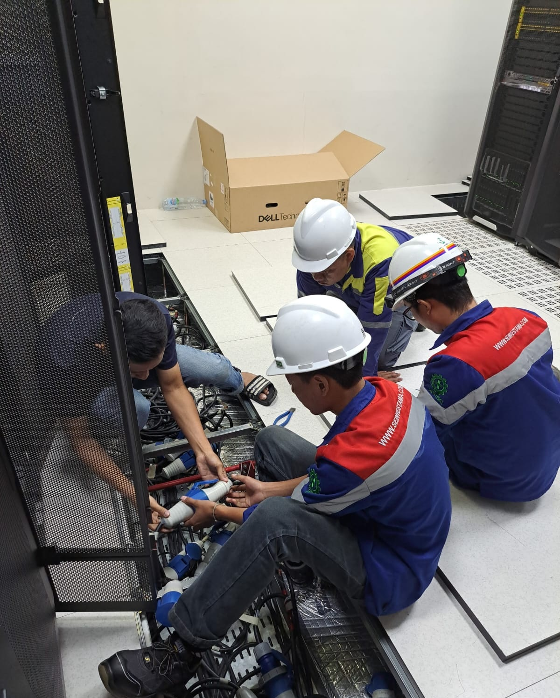
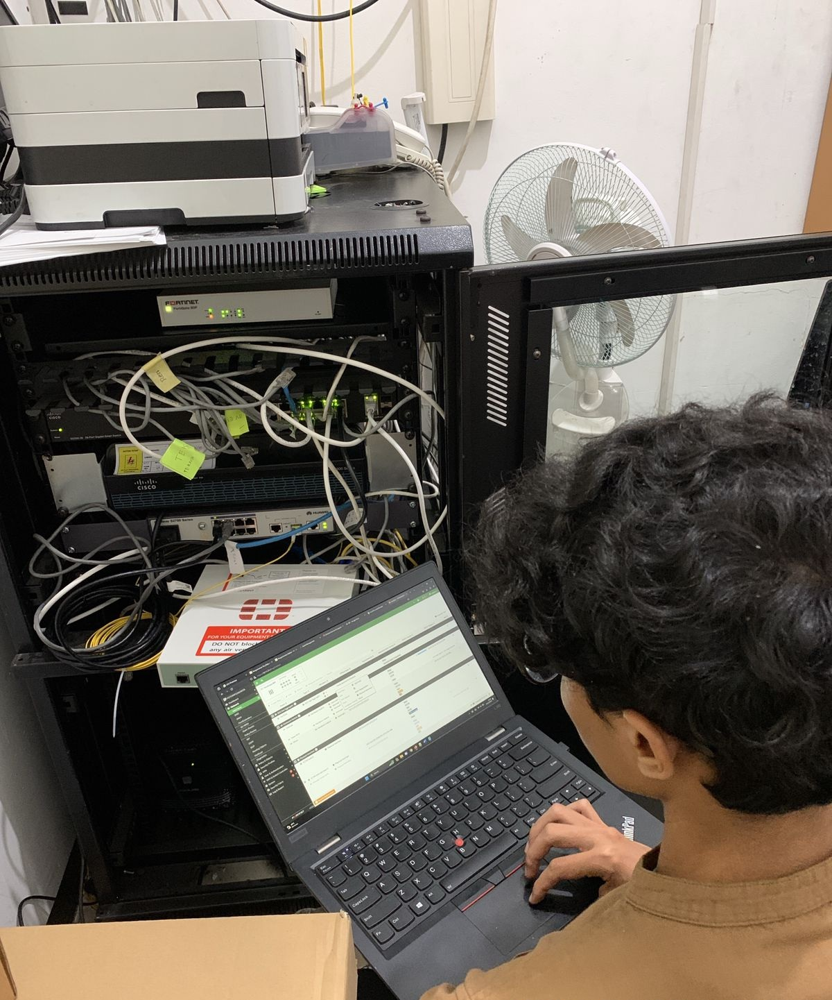
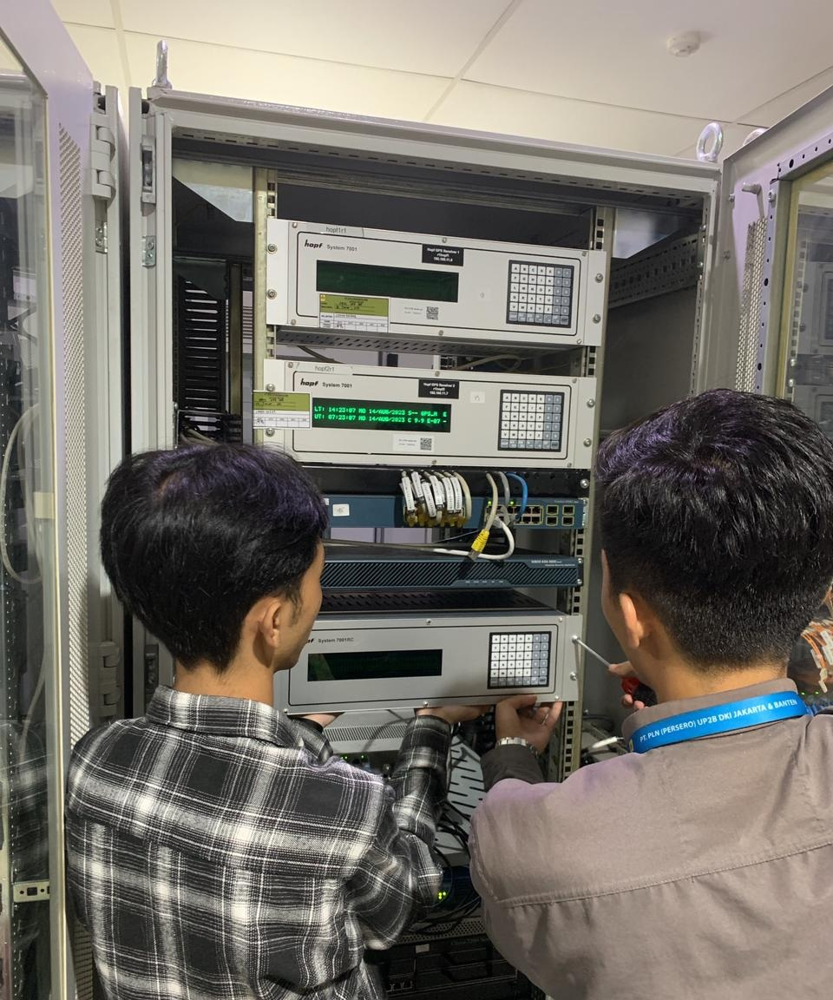

Network Troubleshooting
Diagnosing connectivity, configuration, and infrastructure issues with a structured approach.
I build, troubleshoot, and maintain reliable IT infrastructure, with a focus on networking, system administration, and practical technical support.
I enjoy solving technical problems, learning new infrastructure technologies, and turning hands-on practice into reliable solutions.
I have experience in network engineering, technical support, project documentation, and field operations. My current learning path combines real-world IT experience with hands-on labs in Windows Server, Active Directory, networking, virtualization, and network simulation.
I value clear troubleshooting, good documentation, and solutions that are simple enough to maintain.
See my experience →Diagnosing connectivity, configuration, and infrastructure issues with a structured approach.
Hands-on practice with Windows Server, Active Directory, DHCP, Group Policy, and client management.
Organizing technical information, project documentation, and implementation reports.
Installing and configuring network and firewall devices, supporting project planning, implementation, troubleshooting, and technical reporting.
Managed vendor and client documentation, field-team plans, meeting schedules, and monthly project evaluations.
Six-month internship in Product Engineering, supporting machine repair and production-checker equipment projects.
Pesantren PeTIK · 2021–2022
SMKN 2 Garut · 2017–2020
S1 Ilmu Komunikasi · Universitas Terbuka
My goal is to keep building practical experience rather than only collecting tools and certificates.

Installation and configuration work involving network infrastructure and field implementation.

Field documentation and implementation involving FortiGate firewall infrastructure.

Technical documentation of installation activities and field work.
Hands-on domain environment with users, groups, DHCP, GPO, permissions, and Windows client integration.
Virtual network topologies for practicing routing, switching, and device configuration.
This redesigned portfolio — built to present technical experience, projects, and certifications more professionally.
Hands-on Linux server practice covering basic system administration, networking, user management, permissions, and service configuration.
Issued 5 November 2023
ID: PK4ND10Q9JQQQFG2Issued 26 July 2022
ID: ICT 2121 0000276 2022I'm open to opportunities where I can contribute to IT support, networking, infrastructure, and continuous technical improvement.